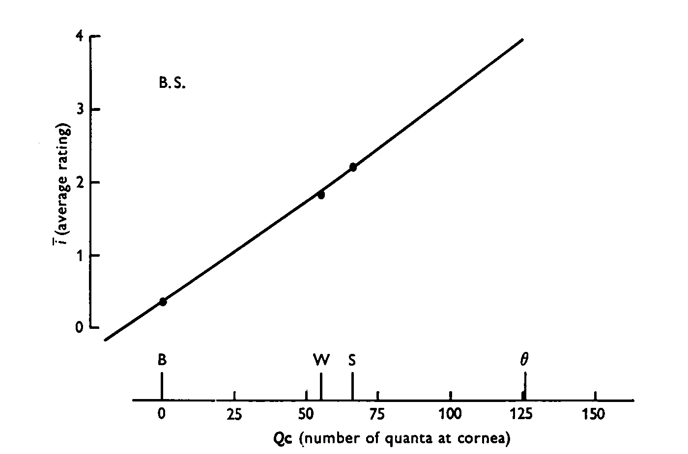
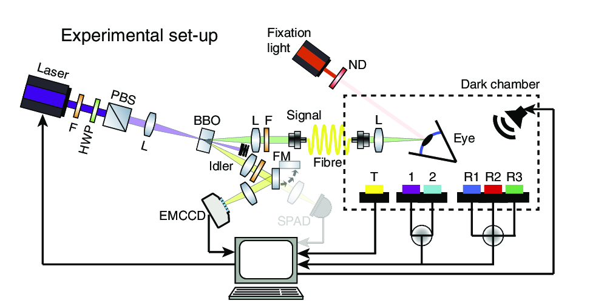
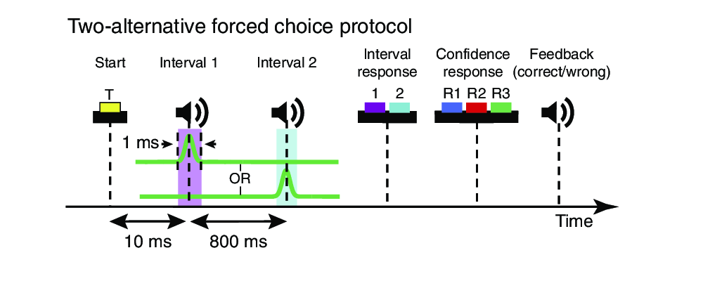
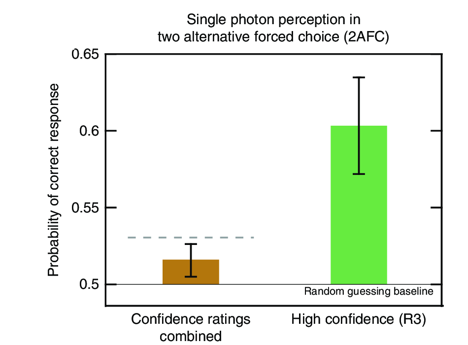

http://bit.ly/Phys141_9
Barlow's experiment
Left: probability of seeing
for possible photons
Right: probability of seeing
for seen photons
| $n/N$ | $x$ | $c_{low}$ | $c_{high}$ |
|---|---|---|---|
| 0.14 | 8.9 | 17 | 19 |
Perceptual difference for stimulus difference of two photons!
Sakitt's experiment
Results
For each stimulus the mean rating $i$ and mean square rating $i^2$ were calculated:
$ \left< i \right> = \sum_{i=0}^6 i p_i $
$ \left< i^2 \right> = \sum_{i=0}^6 i^2 p_i $
| Signal | $N_0$ | $N_1$ | $N_2$ | $N_3$ | $N_4$ | $N_5$ | $N_6$ | $\sum N_i$ | $\left< i \right> $ | $\left< i^2 \right> - \left< i\right> ^2$ |
|---|---|---|---|---|---|---|---|---|---|---|
| Strong | 70 | 75 | 66 | 109 | 63 | 12 | 5 | 400 | 2.19 | 2.22 |
| Weak | 83 | 104 | 78 | 87 | 36 | 11 | 1 | 400 | 1.82 | 1.93 |
| Blank | 566 | 192 | 33 | 9 | 0 | 0 | 0 | 400 | 0.36 | 0.38 |
Linearity between rating and flash intensity

Plotting $i$, the average rating, against $Q_c$, the average number of quanta at the cornea:
$ a = 0.0274 \times Q_c+0.36 $
$ a= 0.0274\times(Q_c+13.1) $
Probability of seeing $i$ or more
Cumulative probabilities $P$ giving a rating $i$ or more
Abscissa is log of rod signal
Points labelled B, W and S are at values of $a$ for blank, weak, and strong stimuli
$\theta$ is absolute threshold.
Smooth curves are Poisson probabilities $P(c, a)$ that $c$ or more rod signals occur when $a$ is the average number occurring:
\[ P(c, a) = \sum_{n=c}^{\infty} \frac{a^n}{n!} e^{-a} \]
Quantum Optical Single Photon Light Source

Two-alternative Forced Choice

Single photon perception

Subjects could detect a single photon with probability above chance.